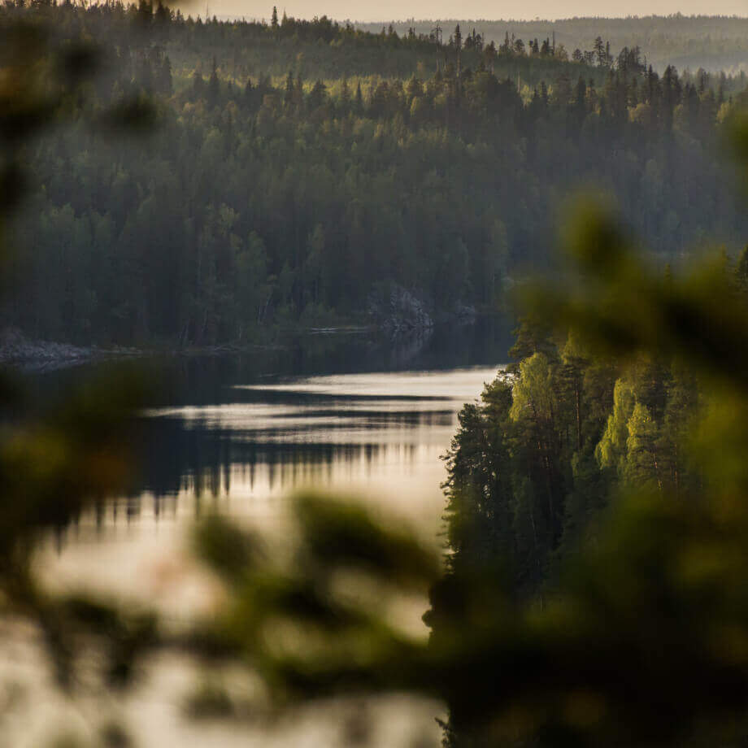

Путешествия по России
Настоящая страна не в выпусках новостей, а здесь.

ваша полка — верхняя
Чего мы там не видели?
По опросам ВЦИОМ, 95% россиян мечтают куда-нибудь поехать, но только 36% планируют
провести отпуск в родной стране. Мол, чего мы тут, дома, не видели? На самом деле, Россия — это целая
вселенная с ласковым морем юга, густыми лесами Саян и суровыми льдами плато Путорана. А ещё увидеть все
эти красоты можно без миллионов на счету, загранпаспорта и многочасовых перелетов. Как, например, Вера
Башмакова — смелая молодая мама, которая взяла в охапку троих детей, усадила их в свою «Ладу» и проехала
20 тысяч километров по родной стране. Мы выбрали и описали некоторые интересные места, достойные вашего
отпуска.
- Часовых поясов 11
- Объектов природного наследия ЮНЕСКО 12
- Объектов культурного наследия ЮНЕСКО 16
- Природных заповедников 105
- Аэропортов 241
Куршская коса

Здесь, посреди лесов и песчаных дюн, вы сможете увидеть два
водных горизонта — спокойного Куршского залива с одной стороны
и подёрнутого рябью волн Балтийского моря с другой. Уникальная природная зона
на краю российского анклава.
На этом Калининградская область не заканчивается. Для
путешественника
и исследователя там же по соседству — самая западная точка России,
Балтийская коса, —
и немецкое наследие россыпи небольших приморских городов. Атмосфера здешних мест исключает
суету,
окуная в спокойствие природы
и запах стального, прохладного моря.
Кольский

Почти весь полуостров находится за Полярным кругом. Саамская
тундра, от которой на юг —
тайга, а на север — Ледовитый океан, прикидывающийся Баренцевым морем..
Возможно, вы смотрели Звягинцева и даже слышали историю
арктического фестиваля в Териберке. Возможно, слово «Хибины» не осталось
под снегом школьных воспоминаний об уроках географии. Возможно,
вы не интересовались пронизывающей земную кору сверхглубокой скважиной,
а от апатитов вас давно накрывает апатия. Но ваша мечта увидеть северное сияние
начинает сбываться с билетом
в Мурманск.
Алтай

Алтай — одно из красивейших мест в России.
В первую очередь из-за гор: если ехать вдоль хребта, вы увидите склоны, усыпанные
соснами, горные реки и озёра. А если вы откроете в автомобиле окна, сможете
познакомиться с невидимым чудом здешних мест — горным воздухом.
Климат на Алтае умеренный, поэтому ехать сюда лучше всего летом.
Так вы увидите всё разнообразие местной флоры и фауны. По лесам Алтая бродят
лоси, над хребтами летают орлы, а на равнинах пасутся косули. И знаменитые
манулы — тоже обитатели Алтайского края.
Зимний Байкал

Всем известен Байкал как крупнейшее озеро
в мире. Многие также знают, что это самый большой источник пресной воды и одно
из красивейших мест в России.
Конечно, это всё так. Но Байкал ещё идеальное место для
соревнований по скийорингу. Это такой вид спорта, когда лыжник привязывает себя
к мотоциклу, и тандем старается развить как можно бóльшую скорость
на льду. В марте 2019 года на фестивале «Байкальская миля» был
поставлен мировой рекорд — 197.011 км/ч.
Карелия

Сибирь заканчивается не на Урале, а в Карелии:
образующая тайгу сибирская лиственница не растёт западнее Водлозера. Зато здесь она вымахивает
на 30 метров — леса карельских национальных парков из-за непроходимых болот
никогда не знали топора. Некоторым соснам уже больше чем полтысячелетия. Прикоснитесь
к живому существу, видевшему солнце раньше, чем увидал его Иван Грозный.
В девственном лесу на сотню километров не встретишь тропы. А на редких
тропинках деревья
в паре метров от земли помечены медвежьими когтями. Чтобы все знали, кто тут хозяин.